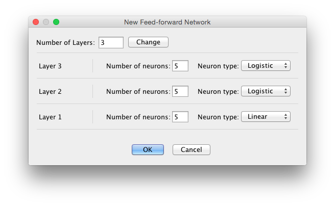

Feedfoward Network

A feed-forward network, comprising a sequence of neuron groups connected by all-to-all synapse groups. Backprop networks and LMS networks are subtypes of feedforward networks. Activation in the bottom layer of a feed-forward network will propagate up the network, layer by layer.

Creation Dialog
A feed-forward network's topology is specified using a creation dialog with these fields:
Number of Layers: Sets the number of layers in the betwork. Enter a value in the text field and press change. When you do, the dialog changes, allowing you to specify number of neurons and neuron type separately from each layer. Layer 1 is the input layer.
Number of Neurons: Sets the number of neurons for a given layer.
Neuron Type: Sets the neuron type for a given layer. By default these are variants of a discrete sigmoidal neuron.